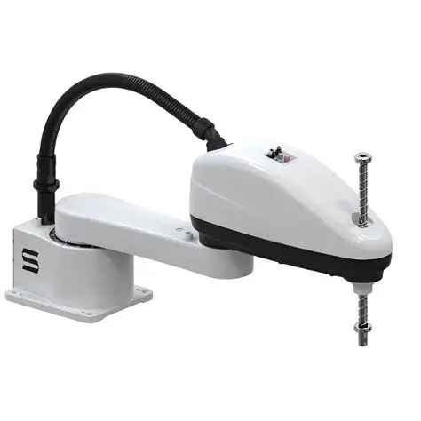

Conceito
SCARA é a sigla para Selective Compliance Assembly Robot Arm. É um robô com dois eixos rotativos paralelos que permitem movimento no plano horizontal, além de um eixo linear vertical. Sua estrutura é rígida no eixo Z e complacente (flexível) no plano XY, o que o torna extremamente rápido e preciso em tarefas de montagem.

Princípio de funcionamento
O braço SCARA possui duas juntas rotativas dispostas horizontalmente, que posicionam o efetuador final em qualquer ponto do plano XY, e uma junta linear (ou rotativa) no eixo Z responsável pela penetração vertical, como em operações de encaixe e parafusamento. A configuração horizontal permite altíssima velocidade de deslocamento entre pontos.
Principais características técnicas
| Graus de liberdade | 4 (2 rotações no plano + 1 translação vertical + 1 rotação do punho) |
|---|---|
| Tipo de movimento | Rotativo no plano horizontal, linear no eixo Z |
| Precisão | Muito alta |
| Velocidade | Muito alta |
| Capacidade de carga | Baixa a média (até ~20 kg) |
| Área de trabalho | Formato cilíndrico achatado |
Aplicações industriais
- Montagem de placas de circuito eletrônico;
- Inserção de componentes e parafusamento;
- Manuseio de peças pequenas em alta velocidade;
- Embalagem de produtos leves;
- Testes e inspeção de qualidade.
Integração com automação e IoT
Controladores de robôs SCARA modernos suportam protocolos como EtherCAT e OPC-UA, permitindo integração direta com sistemas MES da fábrica. Dados de ciclo, tempo de execução e falhas de posicionamento podem ser enviados em tempo real para dashboards de produção, apoiando decisões de manutenção e balanceamento de linha.